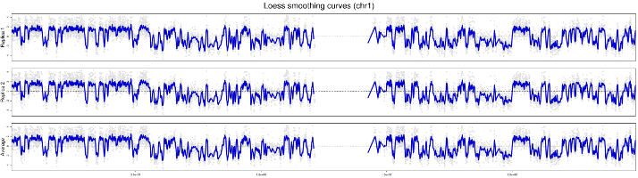
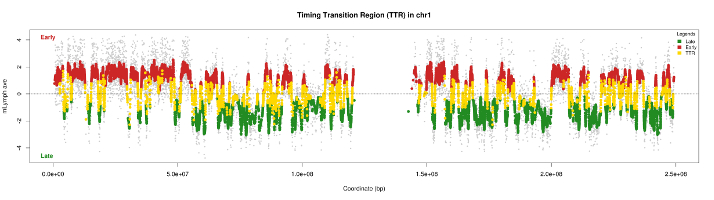
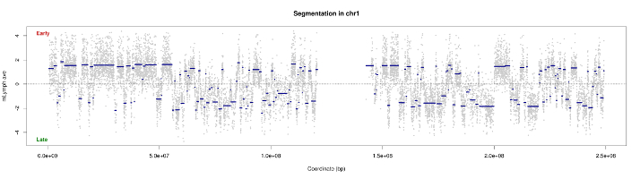

START-R allows, based on data generated by the Agilent Feature Extraction ® software, to analyze DNA chip-based replication timing experiments. This analysis can be parameterized by the user, in particular on biostatistical aspects. There are 6 steps in START-R:
Protocol
1
Normalisation
Data normalization is based on three related methods :
- Correction of the internal dependence of red-green ratios on their intensity independently for each array.
- Scale normalization equalizes the distribution of timing values between multiple samples for comparisons
- Scale normalization equalizes the distribution of timing values between multiple experiences for comparisons
2
Smooth
In statistics and image processing, to smooth a data set is to create an approximating function that attempts to capture important patterns in the data, while leaving out noise or other fine-scale structures/rapid phenomena. In smoothing, the data points of a signal are modified so individual points (presumably because of noise) are reduced, and points that are lower than the adjacent points are increased leading to a smoother signal. Smoothing may be used in two important ways that can aid in data analysis by being able to extract more information from the data as long as the assumption of smoothing is reasonable and by being able to provide analyses that are both flexible and robust.
3
TTR
The curves obtained after smoothing using data from microarrays, show areas "flat" that replicate either early or late called CTRs for Constant Timing Regions. Area between early and late area, there is a transition zone called TTR - Timing Transition Region. Our strategy to characterize the temporal program of replication is to detect these first TTR to better define the CTRs.
For identification, we therefore based on the property of a TTR. This is a transition area between two areas of constant intensity. This field contains points which, one after the other, have a difference log important ratio. This area continues to remain in its dynamics to be definitively classified as TTR
To detect significant differences, we divided pairwise log ratios. To select the positions where the two log ratios are significantly different, the statistical properties of boxplot are used. The selected positions that are classified as outlier. According to an article published in Nature methods, the boxplot performs a distribution grouping maximum points. If some items do not fit with this distribution, then they are classified as outlier. In the end, we detect all TTRs along the chromosomes.
4
CTR
The advantage of having detected first TTRS is to allow a better definition of CTRs. Indeed, the CTRs will be detected after excluding TTRS. So the segment is the most representative of CTR. If TTRS not previously excluded, then the CTR will overlap the adjacent segment TTR. This then will result a bad segmentation because the algorithm will take into account the points positioned in the adjacent TTR for calculating the average of the segment.
5
Combinaison of curves
All previous results (CTRs and TTRs) are collected on a synthesis curve for each chromosome.

6
Differential
To detect diffences between two experiences, 3 methods are available :
- Moving average : comparaison of tow experiences means in a windows by a Welch test
- Utilisation of all previous results : utilisation of CTRs and TTRs
- Outlier method : selection of distances classified like outliers (squared difference)

Outputs : Bed files for galaxy
START-R offers several types of outputs to evaluate the results.
BED file format
Text outputs in START-R are in bed format. The BED format consists of one line per feature, each containing 3-12 columns of data, plus optional track definition lines. The first three fields in each feature line are required:
- chrom : name of the chromosome or scaffold. Any valid seq_region_name can be used, and chromosome names can be given with or without the 'chr' prefix.
- chromStart : Start position of the feature in standard chromosomal coordinates (i.e. first base is 0).
- chromEnd : End position of the feature in standard chromosomal coordinates
chr1 213941196 213942363
chr1 213942363 213943530
chr1 213943530 213944697
chr2 158364697 158365864
chr2 158365864 158367031
chr3 127477031 127478198
chr3 127478198 127479365
chr3 127479365 127480532
chr3 127480532 127481699
Integration in bioinformaic workflow
With bed files outputs, START-R results can be integrated in Galaxy workflow. Galaxy is an open source, web-based platform for data intensive biomedical research.